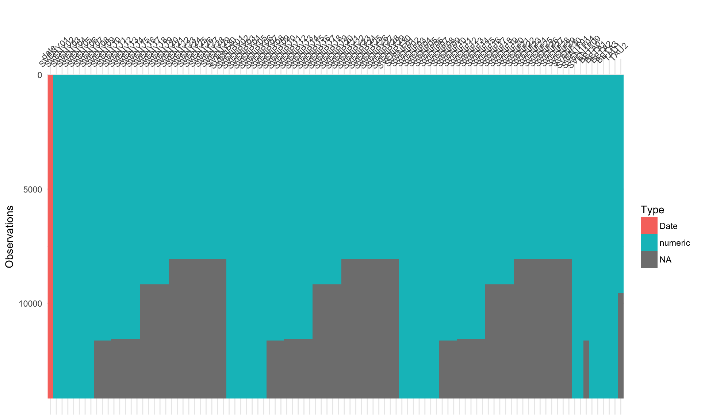
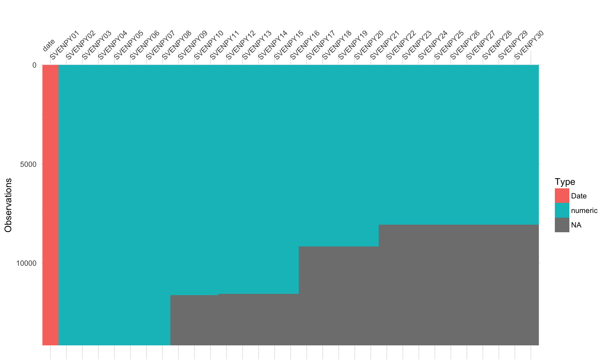
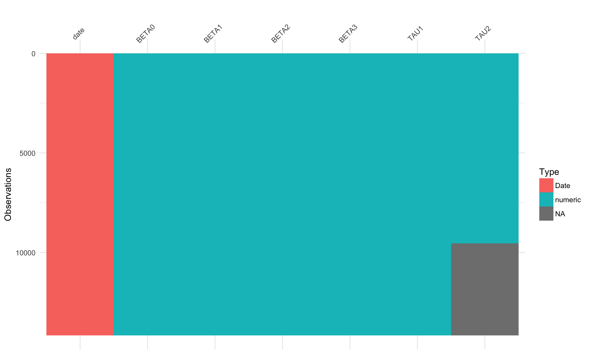
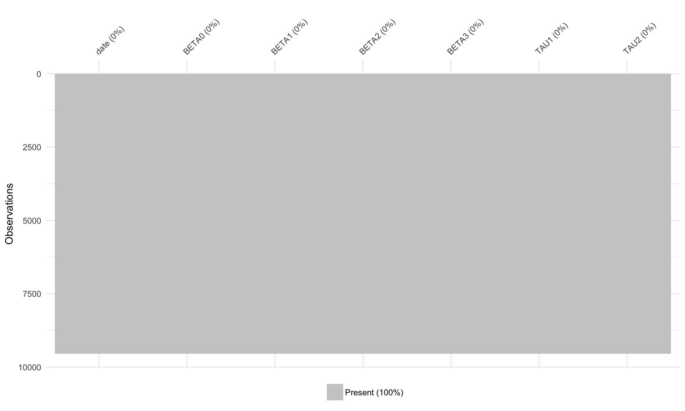

Chapter 2 Data
2.1 Getting the data
Script) 01-download.R
The data is retrieved from the Federal Reserve website, under the discussion series: The U.S. Treasury Yield Curve: 1961 to the Present. The link for that site is here. The specific data set that was downloaded was the XLS file included on that site.
The data was immediately opened in Excel, and was resaved as an xlsx file.
The format of the data is not a true xls file, instead it is some kind of xml
file. This does not play nicely with R’s packages for importing Excel data, so
a resave was necessary and is done manually.
ratekit provides the download_rates_xls() helper function for this.
2.2 Cleaning
Script) 02-cleaning.R
Data is brought in using the readxl package and the ratekit helper, read_rates().
This function reads the rectangle of rates data only, and sets any -999.99 values
to NA. These are often found through the dataset, and I assume they are meant
to represent missing values. To visualize the NA values in the dataset, I use
the visdat package.
First, let’s look at what is immediately brought in by read_rates(). We will
need a few packages throughout the chapter, so let’s load those now as well.
library(visdat)
library(ratekit)
library(dplyr)
library(tibbletime)
raw <- read_rates("data/raw/feds200628.xlsx")
raw## # A tibble: 14,163 x 100
## date SVENY01 SVENY02 SVENY03 SVENY04 SVENY05 SVENY06 SVENY07
## <date> <dbl> <dbl> <dbl> <dbl> <dbl> <dbl> <dbl>
## 1 2018-03-29 2.10 2.27 2.40 2.49 2.56 2.62 2.66
## 2 2018-03-28 2.10 2.28 2.41 2.51 2.59 2.65 2.69
## 3 2018-03-27 2.09 2.26 2.40 2.50 2.58 2.64 2.69
## 4 2018-03-26 2.10 2.30 2.45 2.57 2.65 2.71 2.76
## 5 2018-03-23 2.09 2.27 2.42 2.53 2.61 2.68 2.73
## # ... with 1.416e+04 more rows, and 92 more variables: SVENY08 <dbl>,
## # SVENY09 <dbl>, SVENY10 <dbl>, SVENY11 <dbl>, SVENY12 <dbl>,
## # SVENY13 <dbl>, SVENY14 <dbl>, SVENY15 <dbl>, SVENY16 <dbl>,
## # SVENY17 <dbl>, SVENY18 <dbl>, SVENY19 <dbl>, SVENY20 <dbl>,
## # SVENY21 <dbl>, SVENY22 <dbl>, SVENY23 <dbl>, SVENY24 <dbl>,
## # SVENY25 <dbl>, SVENY26 <dbl>, SVENY27 <dbl>, SVENY28 <dbl>,
## # SVENY29 <dbl>, SVENY30 <dbl>, SVENPY01 <dbl>, SVENPY02 <dbl>,
## # SVENPY03 <dbl>, SVENPY04 <dbl>, SVENPY05 <dbl>, SVENPY06 <dbl>,
## # SVENPY07 <dbl>, SVENPY08 <dbl>, SVENPY09 <dbl>, SVENPY10 <dbl>,
## # SVENPY11 <dbl>, SVENPY12 <dbl>, SVENPY13 <dbl>, SVENPY14 <dbl>,
## # SVENPY15 <dbl>, SVENPY16 <dbl>, SVENPY17 <dbl>, SVENPY18 <dbl>,
## # SVENPY19 <dbl>, SVENPY20 <dbl>, SVENPY21 <dbl>, SVENPY22 <dbl>,
## # SVENPY23 <dbl>, SVENPY24 <dbl>, SVENPY25 <dbl>, SVENPY26 <dbl>,
## # SVENPY27 <dbl>, SVENPY28 <dbl>, SVENPY29 <dbl>, SVENPY30 <dbl>,
## # SVENF01 <dbl>, SVENF02 <dbl>, SVENF03 <dbl>, SVENF04 <dbl>,
## # SVENF05 <dbl>, SVENF06 <dbl>, SVENF07 <dbl>, SVENF08 <dbl>,
## # SVENF09 <dbl>, SVENF10 <dbl>, SVENF11 <dbl>, SVENF12 <dbl>,
## # SVENF13 <dbl>, SVENF14 <dbl>, SVENF15 <dbl>, SVENF16 <dbl>,
## # SVENF17 <dbl>, SVENF18 <dbl>, SVENF19 <dbl>, SVENF20 <dbl>,
## # SVENF21 <dbl>, SVENF22 <dbl>, SVENF23 <dbl>, SVENF24 <dbl>,
## # SVENF25 <dbl>, SVENF26 <dbl>, SVENF27 <dbl>, SVENF28 <dbl>,
## # SVENF29 <dbl>, SVENF30 <dbl>, SVEN1F01 <dbl>, SVEN1F04 <dbl>,
## # SVEN1F09 <dbl>, BETA0 <dbl>, BETA1 <dbl>, BETA2 <dbl>, BETA3 <dbl>,
## # TAU1 <dbl>, TAU2 <dbl>Not a bad start, but I’m worried about missing values. Also, what are those column names?
The column names in the data correspond to different types and lengths of rates used in the paper. The key for understanding the column names is below:
| series | compounding_convention | key |
|---|---|---|
| Zero-coupon yield | Continuously Compounded | SVENYXX |
| Par yield | Coupon-Equivalent | SVENPYXX |
| Instantaneous forward rate | Continuously Compounded | SVENFXX |
| One-year forward rate | Coupon-Equivalent | SVEN1FXX |
| Parameters | NA | BETA0 to TAU2 |
Using vis_dat(), we can take a look at our dataset all at once to determine
which data points to exclude.

A clear pattern is seen in the missing values, with the number of missing values increasing as you go further back in time and look at longer rates (10 year VS 30 year). This might be a bit difficult to see if you look at everything, but becomes clearer if you zoom in on just one set of series.

The parameters are affected by this as well, but not as much, with only TAU2
being affected.

Since the parameters are all we care about for this project, I decided to throw
out any row with an NA value for TAU2. This threw out every data
point before 1980. We can ensure that we don’t have any missing values now
with vis_miss().
# This is the cleaned parameter set, cleaned using 02-cleaning.R
parameters <- readRDS("data/cleaned/parameters/parameters.rds")
vis_miss(parameters)
2.3 Monthly and Ascending
Script) 03-to-monthly-and-ascending.R
At this point, our dataset looks like this:
## # A tibble: 9,543 x 7
## date BETA0 BETA1 BETA2 BETA3 TAU1 TAU2
## <date> <dbl> <dbl> <dbl> <dbl> <dbl> <dbl>
## 1 2018-03-29 4.13 -2.25 0.000228 -3.07 2.84 11.4
## 2 2018-03-28 4.35 -2.48 -0.000089 -3.53 2.99 12.2
## 3 2018-03-27 4.44 -2.59 0.000314 -3.67 3.18 12.5
## 4 2018-03-26 4.27 -2.44 -0.0000588 -3.12 2.73 11.8
## 5 2018-03-23 4.53 -2.69 0.000245 -3.78 3.17 12.9
## # ... with 9,538 more rowsWe want monthly data, and we will need to put it in ascending order. We can
convert to monthly with as_period() from tibbletime, and arrange it by
ascending date with arrange() from dplyr.
parameters_monthly <- parameters %>%
as_tbl_time(date) %>%
arrange(date) %>%
as_period("monthly", side = "end")
parameters_monthly## # A time tibble: 459 x 7
## # Index: date
## date BETA0 BETA1 BETA2 BETA3 TAU1 TAU2
## <date> <dbl> <dbl> <dbl> <dbl> <dbl> <dbl>
## 1 1980-01-31 11.8 0.979 -622. 617. 2.50 2.50
## 2 1980-02-29 11.8 1.53 -617. 621. 1.15 1.15
## 3 1980-03-31 13.2 2.95 -622. 617. 1.78 1.76
## 4 1980-04-30 11.1 0.607 -621. 617. 1.59 1.59
## 5 1980-05-30 11.3 -3.44 -620. 618. 1.36 1.35
## # ... with 454 more rowsThis leaves us with 459 rows of data for our project, spanning 1980-01-31 to 2018-03-29.